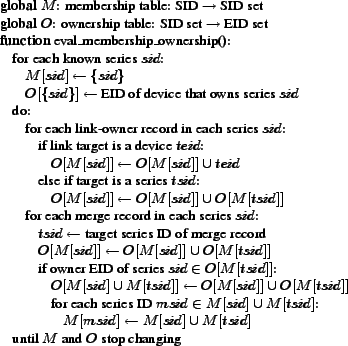

![\includegraphics[width=1.00\textwidth]{intro.eps}](img1.png)
|
| Home - Topics - Papers - Talks - Theses - Blog - CV - Photos - Funny |
Bryan Ford, Jacob Strauss, Chris Lesniewski-Laas,
Sean Rhea, Frans Kaashoek, Robert Morris
Massachusetts Institute of Technology
Published in 7th USENIX Symposium on Operating Systems Design and Implementation, November 6-8, 2006.
The Unmanaged Internet Architecture (UIA) provides zero-configuration connectivity among mobile devices through personal names. Users assign personal names through an ad hoc device introduction process requiring no central allocation. Once assigned, names bind securely to the global identities of their target devices independent of network location. Each user manages one namespace, shared among all the user's devices and always available on each device. Users can also name other users to share resources with trusted acquaintances. Devices with naming relationships automatically arrange connectivity when possible, both in ad hoc networks and using global infrastructure when available. A UIA prototype demonstrates these capabilities using optimistic replication for name resolution and group management and a routing algorithm exploiting the user's social network for connectivity.
Network-enabled mobile devices such as laptops, smart phones, media players, personal digital assistants, gaming consoles, and digital cameras are becoming ubiquitous in the lives of ordinary people. The proliferation of these devices makes secure global peer-to-peer connectivity between them increasingly important. While on a trip, for example, a user in a cyber cafe may wish to copy photos from his WiFi-enabled camera to his PC at home for storage and backup. Two users who meet in a park or other off-Internet location may wish to connect their WiFi devices to exchange photos or other information, and later re-establish a connection between the same devices over the Internet after returning to their homes, without the risk of a third party intercepting the connection. A Voice-over-IP user would like his WiMax phone to be easily reachable by his friends wherever he and they are located, but not to be reachable by telemarketers.
Convenient global communication over the Internet, however, currently requires the target device to have both a global name and a static, public IP address. Users must register with central naming authorities to obtain global names, and mobile personal devices usually have dynamic IP addresses behind firewalls or network address translators [27]. Protocols such as Dynamic DNS [49], Mobile IP [37], and Virtual Private Networks [22] provide piecemeal solutions to these problems, but the configuration effort and technical expertise they require makes them deployable only by organizations with dedicated network administration staff. User interface refinements alone cannot overcome this deployment roadblock, because the protocols depend on centralized resources--global domain names and static, public “home” IP addresses--that are not part of most consumer-oriented Internet service packages. Ordinary users require a solution that “just works.”
The Unmanaged Internet Architecture (UIA) is a peer-to-peer connectivity architecture that gives nontechnical users a simple and intuitive way to connect their mobile personal devices via convenient personal names organized into personal groups. A user can merge multiple UIA devices to form a personal group, after which the devices work together to offer secure remote access to any device in the group from any other. The devices forming the group present the user with a shared personal namespace, which they optimistically replicate [26,28,47] to ensure constant availability on each device whether on or off the Internet. The devices gossip namespace changes as connectivity permits [12], and can propagate updates via mobile devices carried by the user [36].
UIA interprets personal names relative to personal groups, so users can assign concise, meaningful names like ipod instead of long globally unique names like ipod.alicesm5186.myisp.com. In this way UIA conforms to the intuitive model with which users already manage their cell phones' address books. Users normally create personal names by introducing devices locally, on a common WiFi network for example. Once created, these names remain persistently bound to their targets as devices move. Personal names are intended to supplement and not replace global DNS names [33]: users can refer to personal names like phone alongside global names like usenix.org in the same applications.
Different users can introduce their devices to name other users and link their respective personal groups. Bob can refer to his friend Alice as Alice, and if Alice calls her VoIP phone phone then Bob can make calls to Alice's phone using the name phone.Alice. In this way, UIA adapts peer-to-peer social networking ideas previously explored for other purposes [38,31,10,29,39] to form a user-friendly peer-to-peer naming infrastructure. Users can also create and collect names into ad hoc shared groups to reflect common interests or informal organizations.
UIA devices cooperate in an overlay routing protocol to provide robust location-independent connectivity in the face of changing IP addresses, Internet routing failures, network address translators, or isolation from central network infrastructure. Although scalable routing with location-independent node identities is inherently challenging in general [21], UIA focuses on routing among friends and nearby neighbors in the user's social network. We expect the UIA routing algorithm to scale well because each node only consumes storage and bandwidth to track other nodes in its immediate neighborhood.
UIA makes the following primary contributions, expanding on previously proposed ideas [19]. First, UIA introduces a simple and intuitive model for connecting mobile devices into personal groups, providing ad hoc user identities, personal names, and secure remote access, without requiring the user to manage keys or certificates explicitly. Second, UIA presents a novel gossip and replication protocol to manage the naming and group state required by this user model, adapting optimistic replication principles previously developed for file systems and databases. Third, UIA leverages social networking to create a scalable overlay routing algorithm that can provide robust connectivity among social friends and neighbors without relying on central infrastructure.
The next section introduces the operation of UIA devices from a non-technical user's viewpoint. Section 3 describes UIA's design at a high level, Section 4 presents UIA's naming system in depth, followed by the routing layer design in Section 5. Section 6 summarizes implementation status and Section 7 evaluates the performance of the prototype. Section 8 discusses future work, Section 9 presents related work, and Section 10 concludes.
This section describes UIA's operating principles from the perspective of a non-technical user; later sections detail how the system provides this user experience.
A UIA device ideally ships from its manufacturer pre-configured with a name for itself such as laptop or phone, which the user can keep or change as desired. The device learns additional names as its user introduces it to other devices owned by the same user or different users. The introduction process assigns persistent names by which the device can securely refer to other devices.
In a typical introduction, the owner(s) of two devices bring the devices together physically and connect them to a common local-area network. Each user then invokes a local-area rendezvous tool similar to Bonjour's [2] on his device, finds the other device on the network, and selects “Introduce.” Each device displays an introduction key consisting of three words chosen randomly from a dictionary, as shown in Figure 1. Each user then picks the other device's introduction key from a list of three random keys. If one of the devices has unintentionally connected to the wrong endpoint, such as an impersonator on the same network, then the matching key is unlikely to appear on the list, so the user picks “None of the above” and the introduction procedure aborts. Unlike other analogous procedures [13], UIA uses short, user-friendly “one-time” keys that only need to withstand online and not offline attacks, and its multiple-choice design prevents users from just clicking “OK” without actually comparing the keys.
Users can follow the same procedure to introduce UIA devices remotely across the Internet, as long as one device has a global DNS name or IP address and the users have a trustworthy channel through which to exchange introduction keys: e.g., a phone conversation or an authenticated chat session. We also envision alternative introduction mechanisms adapted to specific rendezvous channels such as E-mail, web sites, SMS messages, or short-range wireless links; the details of particular introduction mechanisms are not crucial to the UIA architecture.
A user can introduce UIA devices either to merge his own devices into a personal group sharing a common namespace, or to create named links from his own group to other users' personal groups. The following sections describe these two forms of introduction, and other important group management actions, with the help of an example scenario illustrated in Figure 2.
At Time 1 in the scenario, Bob purchases a new laptop and Internet phone, which come pre-configured with the default names laptop and phone, respectively. At Time 2, Bob uses UIA's local rendezvous tool on each device to find the other device on his home WiFi network and selects “Introduce devices” on each. Bob chooses the “Merge devices” option in the introduction dialogs (see Figure 1) to merge the devices into a personal group.
The devices in Bob's group gossip both existing names and subsequent changes to the group's namespace as physical network connectivity permits. Each device attempts to preserve connectivity to other named devices as they leave the network and reappear at other locations, without user intervention whenever possible. Bob now sees his two personal names phone and laptop on both devices, and can use these names for local and remote access. Working on his laptop at home, he uses his personal name phone to reach the phone via his home WiFi LAN. When Bob subsequently takes his laptop on a trip, he can remotely access his home phone from his laptop over the Internet (e.g., to check his voice messages), still using the name phone. UIA uses cryptography to guarantee that an adversary cannot impersonate the device Bob calls phone, and cannot eavesdrop on his communication.
With the second form of introduction, users link their personal groups together and assign user names to each other, but retain exclusive control over their respective personal groups. In the example scenario, Bob purchases a new WiFi-enabled cell phone at Time 3 and meets Alice at a cafe before he has merged his cell phone with his other devices. Bob finds Alice's iPod using his cell phone's local rendezvous tool and selects “Introduce as a new contact” (see Figure 1), and Alice does likewise. Bob's phone suggests Alice's self-chosen user name Alice, but Bob can override this default (e.g., to Alice-Smith or Alice-from-OSDI) if he already knows another Alice.
Bob and Alice can now refer to each others' devices by combining device names with user names in DNS-like dotted notation. If Alice runs a web server on her home PC, named PC in Alice's personal namespace, then Bob can connect to Alice's server by typing PC.Alice into his laptop's web browser, exactly as he would use a global DNS name like usenix.org.
If Alice's personal web server is UIA-aware, she can use her name Bob in the server's access control lists so that only Bob's personal devices may browse certain private areas. UIA authenticates clients so that no one can impersonate Bob's devices to gain access to these areas.
Bob now returns home and merges his cell phone with his home phone, as shown at Time 4 in Figure 2. Bob's home phone in turn gossips the cell phone's group membership to Bob's laptop, so the laptop and cell phone can name each other without him having to merge them explicitly. Alice's devices similarly gossip her new link named Bob and learn about Bob's three devices, after which she can, for example, refer to Bob's laptop as laptop.Bob.
Users can access or edit their personal groups from any of their devices while other devices are unreachable. If Bob and Alice are on a bus together and disconnected from the Internet, Alice can still reach Bob's laptop from her iPod via her name laptop.Bob, even if they have left their other devices at home. Bob and Alice can continue adding names for contacts they meet on the bus, and their other devices learn the new names via gossip later when they re-connect.
Unfortunately, both of Bob's phones happened to have identical default names of phone, resulting in their names conflicting in his newly merged namespace. UIA notifies Bob of the conflict, and he can continue using the non-conflicting name laptop, but must resolve the conflict before the name phone will work again. Bob resolves the conflict on his cell phone at Time 5, by renaming it cell while leaving the home phone with the name phone. Bob's other devices learn the resolved name bindings via gossip, as do Alice's devices, so Alice now sees Bob's phones as phone.Bob and cell.Bob.
If Bob makes conflicting namespace changes on two of his devices while they are partitioned from each other, UIA detects the conflict once the devices reconnect. Bob can continue using other non-conflicting names in the same group while conflicts exist, and he can resolve such conflicts at leisure on any of his devices.
In addition to personal groups, users can create shared groups to help organize and share their personal names. Bob and Alice discover at Time 6 that they share an interest in photography, and decide to start a photo club for themselves and other friends sharing this interest. To enable members of the club to find each other easily and share photos among their personal devices, Bob uses his laptop to create a shared group named PhotoClub in his personal namespace. On creation, the shared group's only member is Bob himself. To add Alice to the group, Bob drags the name Alice from his personal group into PhotoClub, copying his name binding for Alice into the shared group and making her the second member. Bob can similarly add other friends to PhotoClub, and these names automatically appear in Alice's view of the group the devices gossip the changes.
Although Alice can now refer to the new group as PhotoClub.Bob,
she might like this group to appear
directly in her own personal group
instead of naming it relative to Bob.
Alice drags the PhotoClub name
from Bob's personal group into her own,
giving herself a copy of the name
leading to the same shared group.
She can now refer to group members using the same names that Bob uses,
such as Charlie.PhotoClub.
One or more members of a UIA group may be designated as owners, or members allowed to modify the group. As Figure 3 illustrates, Bob's devices laptop, phone, and cell are owners of his personal group by default, allowing Bob to edit his personal group using any of his devices. The names Alice and PhotoClub are not owners, so Alice and members of PhotoClub can only browse and resolve names in Bob's namespace.
Groups can own other groups. When Bob creates his shared PhotoClub group, UIA automatically includes a name Bob in the new group that gives Bob's personal group ownership of the new group. After adding Alice to the group, Bob can give her co-ownership by clicking the owner flag by her name in the group listing, enabling her to add or remove other members herself. Ownership is transitive: Bob can modify PhotoClub using his laptop because Bob's laptop is an owner of Bob's personal group and Bob's personal group is an owner of PhotoClub.
Returning to the scenario in Figure 2, Bob loses his cell phone at Time 7, and he is not sure whether it was stolen or just temporarily misplaced. If the cell phone was stolen and has no local user authentication such as a password or fingerprint reader, the thief might obtain not only Bob's data on the cell phone itself, but also remote access to services authorized to his personal group via UIA names. UIA devices capable of accessing sensitive information remotely should therefore provide strong local user authentication, and should encrypt personal data (including UIA state) stored on the device, as Apple's FileVault does for example [3]. The details of local user authentication and encryption are orthogonal to UIA, however.
To minimize potential damage if a thief does break into Bob's user account on his cell phone, Bob can revoke the cell phone's ownership of his personal group. If the cell phone re-appears and Bob realizes that he just misplaced it, then he can “undo” the revocation and return the phone to its normal status. If the cell phone remains missing, however, UIA ensures that no one can remotely access personal information or services on Bob's other devices via the lost phone once the revocation announcement has propagated to those devices. Similarly, the cell phone loses its access to the files Alice shared with Bob as soon as Alice's PC, on which the files reside, learns of the revocation from any of Bob's remaining devices.
Revocation cuts both ways: a thief might try to “hijack” Bob's personal group, using the stolen cell phone to revoke the ownership of Bob's other devices before Bob finds that the phone is missing. In UIA's current ownership scheme in which all owners have full and equal authority over a group, Bob's devices cannot distinguish the “real” Bob from an impostor once a stolen device's local access control is broken. UIA therefore allows any device to dispute another device's revocation of its ownership.
In the example scenario, when Bob next uses his laptop, UIA informs him that his laptop's ownership of his personal group has been revoked by the cell phone, which Bob realizes was stolen. In response, Bob issues a revocation of the cell phone's ownership from his laptop. The two mutual revocations effectively split Bob's original personal group into two new, independent groups: one containing only the cell phone, the other containing Bob's remaining devices. All existing UIA names referring to Bob's old personal group, and any access authorizations based on those names, become unusable and must be manually updated to point to the appropriate new group. Alice's name Bob for example is now marked “disputed” in Alice's namespace, and Alice's PC rejects attempts by any of Bob's devices to access the files she shared with Bob earlier using that UIA name. To update her name for Bob and safely renew his access, Alice can re-introduce her devices directly to Bob's the next time they meet, or obtain a fresh link to Bob's new personal group from a trusted mutual friend who already has one.
Group ownership disputes need not be permanent. Suppose two people who co-own a shared group get into an argument, and split the group by issuing mutual revocations. If the original co-owners later settle their differences, they can undo their conflicting revocations or simply merge their respective “splinter” groups back together via UIA's normal merge mechanism. Links to the original group become unusable during the dispute, but function again normally after the dispute is resolved.
This section outlines UIA's high-level design, which consists of separate naming and routing layers that together realize the user experience described above. Sections 4 and 5 detail the naming and routing layers, respectively.
UIA devices identify each other using cryptographically unique endpoint identifiers or EIDs. Whereas DNS maps a name to an IP address, UIA maps a personal device name such as Bob's laptop to an EID. Unlike IP addresses, EIDs are stable and do not change when devices re-connect or move. UIA's routing layer tracks mobile hosts by their EIDs as they change IP addresses, and can forward traffic by EID when IP-level communication fails due to NAT or other Internet routing discontinuities.
A UIA device creates each EID it needs automatically by generating a fresh public/private key pair and then computing a cryptographic hash of the public key. As in SFS [32], EIDs are cryptographically unique, self-configuring, and self-certifying, but not human-readable. As in HIP [34], UIA-aware network transports and applications use EIDs in place of IP addresses to identify communication endpoints. (UIA can also disguise EIDs as “actual” IP addresses for compatibility with unmodified legacy applications, as described later in Section 6.)
An EID corresponds to a particular user's presence on a particular device. A user who owns or has access to several devices has a separate EID for each. A device accessed by only one user needs only one EID, but a device shared among multiple users via some form of login mechanism creates a separate EID for each user account. Unlike cryptographic host identifiers in SFS and HIP, therefore, EIDs are not only stable but personal.
Personal EIDs allow multiple users of a shared UIA host to run independent network services on the device. Since each user's services bind to the user's EID rather than to a host-wide IP address, UIA-aware network applications can run exclusively in the context of the user and rely on UIA to provide user-granularity authentication and access control. When Bob connects his laptop to the HTTP port at the EID to which PC.Alice resolves, he knows he is connecting to Alice's personal web server and not that of another user with an account on the same PC. Alice's web server similarly knows that the connection is coming from Bob and not from someone else using laptop, because her name laptop.Bob resolves to an EID specific to Bob's account on his laptop.
Each UIA device acts as an ad hoc name server to support name lookups and synchronize namespace state across devices. UIA names follow the same formatting rules as DNS names, consisting of a series of labels separated by dots, and devices resolve UIA names one label at a time from right to left. To resolve the name PC.Alice, for example, Bob's laptop first resolves the rightmost component Alice to find Alice's personal group, and from there resolves the second component PC to find the EID for Alice's PC as named in Alice's personal group.
Whereas DNS resolution traverses a strictly hierarchical tree of “zones” starting from a centrally-managed global root zone, each UIA device has a unique root for resolving UIA names, and users can link UIA groups to form arbitrary graphs. After Bob meets Alice at Time 3 in Figure 2, for example, Bob's “root” group for UIA name resolution, corresponding to his personal group, appears to Alice as a “sub-group” named Bob. Conversely, Alice's “root” group appears to Bob as a “sub-group” named Alice. Since Bob's and Alice's naming relationship forms a cycle in the graph of UIA groups, Bob could for example refer to his own phone via the redundant name phone.Bob.Alice.
UIA groups may at times contain label conflicts, or bindings of a single name to multiple distinct targets. When Bob at Time 4 merges his new cell phone with its default name phone into his personal group, which already contains another device named phone, the two phone bindings result in a label conflict. Label conflicts also arise if an ownership dispute splits the target that a group name refers to, as described in Section 2.9. Name resolution fails if it encounters a label conflict, preventing the user from following ambiguous links before resolving the conflict. A conflict on one label does not affect the usability of other labels in the same group, however.
UIA uses optimistic replication [26,28,47] to maintain a user's personal UIA namespace across multiple devices, guarding namespace state against device loss or failure and keeping the namespace available on all devices during periods of disconnection or network partitions. Each device stores in an append-only log all persistent naming state for its user's personal group and any other groups of interest to the user, and uses an epidemic protocol [12] to distribute updates of each group's state among the devices interested in that group.
UIA's epidemic protocol uses a classic two-phase “push/pull” algorithm. In the “push” phase, when a device creates a new log record or obtains a previously unknown one from another device, it repeatedly pushes the new record to a randomly-chosen peer until it contacts a peer that already has the record. This rumor mongering technique works well when few devices have the record, propagating the “rumor” aggressively until it is no longer “hot.” In the “pull” phase, each device periodically contacts a randomly-chosen peer to obtain any records it is missing. These anti-entropy exchanges work best when most devices already have a record, complementing the rumor mongering phase and ensuring that every device reliably obtains all available records.
This section describes in detail how UIA devices manage and synchronize the namespace state comprising their users' personal and shared groups.
UIA organizes the records comprising a device's log into series, each series representing the sequence of changes a particular device writes to a particular group. The state defining a group consists of one or more series, one for each device that has written to the group. All devices participating in a group gossip and replicate all records in each of the group's series, preserving the order of records in a given series, but do not enforce any order between records in different series. Since UIA separates the naming state for each group by series, devices can limit gossip to the records relating to groups they're interested in, instead of scanning their neighbors' entire device logs.
As shown in Figure 4, each log record contains a series ID, a sequence number, data specific to the record type, and a signature. The series ID (SID) uniquely identifies the series to which the record belongs. The sequence number orders records within a series. The device that owns a series signs each record in that series with its private key, so that other devices can authenticate copies of records they receive indirectly. A cryptographic hash of the record yields a Record ID, which uniquely identifies the record for various purposes described later.
UIA currently defines four record types, listed in Figure 4 and summarized briefly below:
This section describes how UIA devices implement the important user-visible namespace control operations, in terms of the specific records the devices write to their logs at the events in the example scenario from Figure 2. The following section will then explain how devices evaluate the contents of their logs to determine the effective state of each group at any point in time.
When Bob and Alice install or first start UIA on a device at Time 1, the device first writes a create record to its log, forming a new series to represent the user's personal “root” group on that device. The device then writes a link record to the new series, giving itself a suitable default name such as laptop. The device sets the owner flag in this link record to make itself the sole initial owner of the group.
When Bob introduces and merges his devices at Time 2 to form a personal group, each device writes to its own root series a merge record pointing to the other device's root series. These cross-referencing merge records result in a merge relationship between the two devices, which begin to gossip the records comprising both series so that each device eventually holds a complete copy of each. This merging process does not actually create any new link records, but causes each device to obtain copies of the other device's existing link records (the laptop's link record for its default name laptop and the phone's record for its name phone) and incorporate those names into its own root group.
Aside from merging devices' root series via introduction, a user can use a single device to merge two arbitrary groups, provided the same device already has ownership of both groups. If Bob creates two shared sub-groups and later decides they should be combined, for example, he can merge them on any of his devices. The device writes cross-referencing merge records to the relevant series, exactly as in the introduction scenario.
When Bob and Alice introduce their devices to each other at Time 3, the devices exchange the series IDs of their respective root series, and each device writes a link record to its own root series referring to the other device's root series. Bob's new link record named Alice gives Alice a name in his personal group, and Alice's new link record named Bob likewise gives Bob a name in her group. The devices do not set the owner flags in these new link records, giving Alice and Bob only read-only access to each others' namespaces.
Individual merge relationships in UIA are always pairwise, between exactly two series, but merge relationships combine transitively to determine effective group membership. When Bob introduces his cell phone to his home phone at Time 4, the two devices form a merge relationship between their respective root series. Since Bob's home phone and laptop already have a merge relationship, Bob's laptop and cell phone transitively learn about each other via gossiped records they receive from the home phone, and the union of the records in the three root series determine the contents of the resulting group. Since the merged group has two link records named phone with different target EIDs, the devices flag a label conflict on phone and refuse to resolve this name.
When Bob renames his cell phone to cell at Time 5 to resolve the conflict, his device writes to its root series a cancel record containing the record ID of the link record defining the cell phone's previous name, then writes a new link named cell that is otherwise identical to the original link. Since one of the two conflicting link records is now canceled, the label conflict disappears, and the names phone and cell become usable on all of Bob's devices once they receive the new records via gossip. Bob can resolve the conflict on any of his devices, because any group owner can cancel a link written by another device.
The user can also delete a name from a group outright, in which case the device writes a cancel record without a new link. The ownership granted by a link-owner record, however, can only be nullified by the revocation process described later in Section 4.3.1.
Because UIA implements renames non-atomically with a cancel record coupled with a new link record, if Bob renames Alice to Alice1 on his laptop and renames Alice to Alice2 on his phone while the two devices are temporarily partitioned, on reconnection he will have two names Alice1 and Alice2 with no conflict detected. This corner-case behavior, while perhaps slightly surprising, seems acceptable since it “loses” no information and at worst requires Bob to delete one of the resulting redundant names.
Bob uses his laptop at Time 6 to create his shared PhotoClub group. To create the group, the laptop first writes a create record to generate a fresh series ID. The laptop then writes two link records: first, a link named PhotoClub in its root series pointing to the new series, and second, a link named Bob in the new series pointing back to the root series. The laptop sets the owner flag in only the latter link record, giving Bob's personal group ownership of the new group, without giving PhotoGroup ownership of Bob's personal group.
Suppose that Bob now uses a different device, his cell phone for example, to add Alice to PhotoClub. Bob's cell phone is already an indirect owner of PhotoClub, because the cell phone is an owner of Bob's personal group and Bob's personal group owns PhotoClub. The cell phone does not yet have a series in PhotoClub, however, to which it can write records: initially only the laptop, which created the new group, has a series in the group, and only it can sign records into that series. The cell phone therefore creates its own PhotoClub series, by writing a create record to form a new series owned by itself, and then writing a merge record to this new series pointing to the laptop's PhotoClub series. Although no corresponding merge record in the laptop's PhotoClub series points back to the cell phone's new series (in fact the laptop may be offline and unable to sign such a record), the cell phone's merge record takes effect “unilaterally” by virtue of the cell phone's indirect ownership of PhotoClub. The cell phone then writes a copy of Bob's link to Alice into its new PhotoClub series, and other devices learn of the new series and the new name as they gossip records for PhotoClub.
When Bob learns at Time 7 that his cell phone is missing, he uses his laptop to revoke the cell phone's ownership of his personal group, either by deleting the name cell from his personal group or by clearing its owner flag. To implement this revocation, however, Bob's laptop cannot merely write a cancel record pointing to the link record for cell: the cell phone would still own a series in Bob's personal group and thus retain “hidden” control over the group.
To revoke the cell phone's ownership, therefore, Bob's laptop creates a new personal group for Bob and copies the original group's name content into it. To create the new group, the laptop writes a create record whose series ID field is not empty as usual, but instead contains the SID of the laptop's original root series. The laptop then writes link records to the new series corresponding to all the active links in the old series, omitting links or ownership flags to be revoked. The create record written into the old root series indicates to all interested devices that the new series forms a group that is intended to replace or act as a successor to the original group.
As long as only one such “create successor” record exists in Bob's old personal group, all devices treat links to any series in the old group as if they linked to the successor group instead. Upon receiving via gossip the records describing Bob's new group, for example, Alice's devices subsequently resolve her name Bob to the new group, and use it to calculate which devices should be given access to resources she has authorized Bob to access, effectively revoking the cell phone's access.
If the cell phone writes a conflicting “create successor” record to its series in Bob's original group, however, then the original group becomes disputed, and other devices refuse to resolve links to any series in the original group as soon as they learn about the dispute. Alice's devices thus refuse to resolve her name Bob and deny access to any resources she authorized using that name. Once Alice updates her broken link to refer to the correct successor group, either by re-introducing with Bob or by copying a fresh link from a mutual friend, her device writes a new link referring to a series in Bob's new group, the old group becomes irrelevant and Bob can again access Alice's resources via the devices in his new personal group.
If link or cancel records exist on Bob's other devices that his laptop has not yet received at the time of revocation, the laptop cannot copy these change records into the new group and they become orphaned. Bob's devices continue to monitor and gossip records in the old group after the revocation, however, to detect both orphans and ownership disputes. If a device with ownership of the new group detects an orphaned record written by itself or another device with ownership of the new group (not a revokee), it automatically “forwards” the change by writing a corresponding record to the new group.
This section describes the algorithms UIA devices use to determine the current state of a given group from the set of log records they have on hand. Devices evaluate group state in three stages: (1) membership and ownership, (2) group successorship, and (3) name content.
|  |
In the first stage, a UIA device collects the series IDs referred to by all records in its log, and clusters them into sets based on merge relationships to form UIA groups. At the same time, the device computes the set of device EIDs to be considered owners of each group, either directly or transitively. Group membership and ownership must be computed at the same time because they are mutually dependent: group membership expansion via merge can introduce additional owners, and owner set expansion can place additional merge records under consideration.
Figure 5 shows pseudocode for membership and ownership evaluation. The algorithm uses a membership table mapping each known series ID to a set of series IDs sharing a group, and an ownership table mapping each group (represented by a set of series IDs) to a set of owner device EIDs. The algorithm first initializes the entry in for each series to a singleton set containing only that series, and initializes the owner set entry in for each such singleton group to the EID of the device that owns that series. The algorithm then repeatedly merges groups and expands ownership sets until it reaches a fixed point. The algorithm terminates because member and owner sets only grow, and each device knows of a finite number of series IDs at a given time.
In each iteration, the algorithm first follows link-owner records, expanding the ownership set of the group containing a link-owner record according to the target device EID or the current ownership set of the target group, as applicable. Across iterations, this step handles transitive propagation of ownership across multiple groups, such as Bob's laptop's ownership of PhotoClub via the laptop's ownership of Bob's personal group.
Second, for each merge record,
the algorithm expands the ownership set
of the group containing the merge record
to include the ownership set of the target group,
then checks whether the device that wrote the merge record
is authorized
by virtue of having ownership of the target group.
The authorization check prevents a device
from merging a series into an arbitrary group without permission.
In the symmetric case
where two merge records refer to each others' series IDs,
each merge is authorized by the fact
that the other merge grants ownership of its own series to its target.
Once a merge is authorized,
the algorithm combines the SID sets of the respective groups
to form one group containing all the merged SIDs,
and similarly combines the respective owner sets.
In the second stage,
a device computes the successorship status
of each group resulting from the first stage,
in order to handle revocations and ownership disputes.
The device first forms a directed graph
reflecting immediate successor relationships:
a create record in series  yielding a new series
makes the group containing a successor to the group containing
yielding a new series
makes the group containing a successor to the group containing  .
Next, the device takes the transitive closure of this graph
to form a transitive successorship relation:
if succeeds
.
Next, the device takes the transitive closure of this graph
to form a transitive successorship relation:
if succeeds  and succeeds ,
then transitively succeeds
and succeeds ,
then transitively succeeds  .
.
The device now assigns to every group one of three states as follows. If has no successors, it is a head group: no revocations have been performed in the group, and links to series IDs in the group resolve normally. On the other hand, if there is a second group that is a transitive successor to and is also a transitive successor to all other transitive successors to , then is the undisputed successor to . In this case, links to series IDs in group resolve to group instead. Finally, if has successors but no undisputed successor, then group is disputed, and links to series IDs in do not resolve at all.
Figure 6 illustrates several group successorship scenarios
and the corresponding results of this algorithm.
In scenario (1),
two conflicting revocations have placed group A under dispute;
A's successor B also has a successor due a second revocation in B
but B is not under dispute.
Scenario (2) is like (1)
except a revocation has also been performed in group C,
forming a new head group E.
Scenario (3) shows the result after the warring owners in (2)
settle their differences and merge their head groups D and E,
resolving the original dispute over group A.
In the third and final stage, for each head group to be used for name resolution, a device computes the group's namespace state as follows. Given the set of all link records in every series in the group, the device removes all link records targeted by a cancel record in any series of the group to form the set of active links. Any device that owns a group can cancel a link written by another device, but a cancel cannot revoke ownership.
The set of active labels in a group, shown in a namespace browser for example, is the set of labels appearing in any active link record in the group. To be usable, all active links for a given label must have the same permissions, and must target the same device EID or SIDs in the same group. Otherwise the label is in conflict, as Bob's home and cell phone are at Time 4 in the example. If Bob creates identical links on different devices independently, such as by separately introducing both his cell phone and his laptop to Alice to yield duplicate Alice links, this action does not create a label conflict when Bob merges his home and cell phone together because the redundant links have the same target and permissions.
Once the naming layer has resolved a device name to a location-independent EID, UIA's routing layer is responsible for locating the target device--finding its current IP address--and forwarding traffic to it through other devices if direct connectivity is unavailable.
Many designs are conceivable that would perform these two functions, such as a general-purpose overlay routing algorithm we explored previously [16]. In this work, however, we adopt a simple design that does not attempt to provide connectivity between arbitrary devices, but is optimized for connecting to devices in the user's immediate social neighborhood: primarily the user's own devices and those of friends named in the user's personal group, and occasionally “friends of friends,” but rarely more indirect contacts. In practice we expect users to create (or copy from other users) names in their own personal groups for others with whom they wish to interact regularly, justifying our assumed usage model.
In brief, UIA builds an overlay network between devices in its social neighborhood. To locate a remote device by its EID, a device floods a location request through the overlay to discover the EIDs, IP addresses, and ports of devices forming a path through the overlay to the target. The originating device then connects directly to the target's discovered IP address and port, or if the target is not directly reachable (e.g., because of an intervening NAT), forwards traffic to it by source-routing data via the existing connections in the discovered path.
Each UIA device maintains an open TCP connection with up to a configurable number of overlay peers. Ideally, these peers should be on the public Internet, so that a device behind a NAT can receive messages from devices outside via its active peering connections. A device should choose other devices when none on the public Internet are reachable, however, so that the overlay remains useful in ad hoc environments. Furthermore, the devices of friends should be close to each other in the overlay, so that location or forwarding paths between them are short.
To meet these goals, a device first prefers as peers devices that are stable, and secondarily prefers those that are closest to it in friendship distance. A device is considered stable if it does not have a private IP address [41] and has met a threshold level of availability in the recent past. A peer's friendship distance is roughly the number of labels in the local device's shortest name for that peer. The rest of this section explains how a device discovers stable peers and calculates friendship distances.
Each device maintains a potential peer set that contains potential peers' EIDs and the times, IP addresses, and ports at which the device has connected to those peers in the past. Initially, a device populates this set with the devices to which the user has directly introduced the device. To discover new potential peers, a device periodically exchanges its potential peer set with those of other devices within a configurable maximum friendship distance. A device adds to the set only those devices to which it is able to establish a TCP connection when it discovers them.
A device classifies a potential peer as stable if it meets an availability threshold (e.g., 90%) at the same public IP address and port in the recent past (e.g., the last week). To monitor availability, a device periodically chooses a random potential peer and attempts a connection to its last known location. A device need not have a static IP address to be classified as stable: a device with a dynamic non-private IP address that changes infrequently, such as a home PC left on and connected via a DSL or cable modem, will also typically be classified as stable.
A device computes the friendship distance of each of its potential peers by assigning a distance of 1 to its direct peers: those the naming layer identifies as devices in the user's personal group and in groups to which the user has linked (the user's immediate friends). The device then assigns distances to indirect peers transitively, giving the direct peer of a direct peer a distance of 2, for example.
To improve robustness, a device manufacturer can seed the potential peer sets of its products with a set of default peers, which devices treat as having an infinite friendship distance. Two newly-purchased mobile devices, after being introduced and exchanging potential peer sets, thus have at least one stable peer in common at the outset to help them re-connect after a move. Once the mobile devices discover other stable peers at smaller friendship distances, however, they prefer the new devices over the default peers, mitigating the manufacturer's cost in providing this robustness-enhancing service.
To communicate with a remote device, a device first attempts a direct TCP connection to the IP address and port at which it last connected to the target, if any. If this connection fails or the originator has no address information for the target device, it floods a location request through the overlay to locate the target by its EID.
UIA uses a token count, in place of the traditional hop count [6], to limit the scope of location request floods. The token count bounds the total number of devices to which a request may be forwarded, rather than the number of times each request may be re-broadcast. This distinction is important for two reasons. First, although devices seek to connect with a fixed number of peers, the number of devices that choose a given device depends on the target's stability and popularity, so the overlay's degree is highly non-uniform. Hop count is thus a poor predictor of the number of devices a request will reach. Second, the overlay network is highly redundant: two friends' devices are likely to share many common peers, for example, so searching all devices within some distance of a request's source is often unnecessary.
Location requests contain the EIDs, IP addresses, and ports of devices they have traversed; devices forward responses back through the overlay along the same path.
A device with an open TCP connection to a request's target immediately responds with the target's IP address and port. Otherwise, it subtracts one token for itself, divides the other tokens among its peers not already in the path, distributing any remainder randomly, and forwards the request to those peers that receive a non-zero count. The device retains the request's target EID and return path for a short period, waiting for the forwarded requests to complete, and replying to the original request when any of the forwarded ones succeed or when all of them have failed. A request also fails if the source has not received a successful response within a timeout. If a device receives a duplicate request for the same EID as an outstanding request (e.g., along a different path), it forwards the new request anyway according to its token count, giving peers for which there were not enough tokens in previous instances another chance to receive the request.
As shown in Section 7, most location requests succeed within the near vicinity of the source in the overlay network. To limit the cost of the search, a device thus initially sends each request with a limited number of tokens and retries after each failure with a multiplicatively increased number, up to some maximum.
To communicate with the target device after receiving a successful location response, the originator tries to open a direct connection to each device in the response path, starting with the target itself and proceeding backwards along the path until a connection succeeds. The originator then source-routes messages to the target along the tail of the path starting with the device to which it connected.
Consider for example two devices a and b behind different NATs, both of which peer with a common stable device s. When a performs a location request for b's EID, it discovers the path a → s → b. Device a then tries to open a direct connection to b, but b's NAT blocks that connection, so a forwards traffic to b through s instead. Device s itself initiates no location requests, but merely forwards traffic along the path specified by a.
A prototype UIA implementation currently runs on Linux and Mac OS X. As illustrated in Figure 7, the prototype consists of two user-level daemons implementing UIA's naming and routing layers, respectively, and a graphical application for browsing and controlling devices and groups. The control application and other UIA-aware applications on the device interface directly to the naming and routing daemons via Sun RPC. Through these interfaces, UIA-aware applications can resolve UIA names to EIDs, explore and modify groups on behalf of the user, send packets to EIDs, receive packets on the device's EID, and discover peers on the local-area network.
The name daemon is written in Python and implements the design described in Section 4, providing group creation, merging, named links between groups, naming state gossip, state evaluation, multi-component name resolution, and ownership revocation. The name daemon does not yet detect and copy orphaned change records across revocations as described in Section 4.2, however.
The prototype routing daemon implements in C++ the algorithms described in Section 5. The router uses Bonjour for local-area device discovery, and uses SSL over TCP connections for secure communication.
The UIA control application allows the user to browse the UIA namespace and create and modify groups, as illustrated earlier in Figure 3, and supervises the device introduction process as illustrated in Figure 1. The control application is still unpolished and does not yet fully support shared groups or revocation, however.
We have ported the UIA prototype to the Nokia 770 Internet Tablet, a Linux-based Internet appliance with an ARM processor. The naming and routing layers have the full functionality of the regular Linux/Mac version of UIA, but the port of the GUI control application is not yet complete. In general, we expect the routing and naming modules to port easily among smaller devices, while the GUI component requires more modifications because of the more specialized and restrictive user interface frameworks available on each class of mobile device. UIA does not rely on extensive data entry or other forms of user interaction that are fundamentally difficult to achieve on small devices, however.
The UIA prototype supports legacy applications through a tun wrapper and DNS proxy. The tun wrapper disguises EIDs as device-local IP addresses and uses the kernel's tun device to forward applications' TCP and UDP packets for these special IP addresses over UIA's routing layer. The DNS proxy similarly intercepts name lookups made by local applications and resolves UIA names to device-local IP addresses for the corresponding EIDs. We have run Apache, Firefox, OpenSSH, and Apple's Personal File Sharing over UIA using this legacy interface without modification or recompilation.
UIA's legacy application support layer makes the user's personal group appear to applications like a global virtual private network, by intercepting network-local broadcast packets that applications send to UIA's special IP addresses and forwarding them securely to each of the user's personal devices. Because of this feature, many broadcast-based “local-area” service discovery protocols such as Bonjour automatically work across all the devices in the user's personal group, even when some of the devices are in fact remote. We have used Apple's Bonjour-based Personal File Sharing, for example, to locate and share files remotely between devices in a UIA personal group as if they were present on the same LAN.
We currently run the UIA prototype on a number of desktop and laptop machines in our lab, and regularly run existing applications such as SSH over UIA to reach our mobile devices via their short personal device names. UIA automatically accounts for IP address changes and traverses NATs as necessary; SSH connections open when we take a laptop home need not be restarted. Although these uses are already possible via alternate protocols such as mobile IP, the complexity of configuring these alternatives has generally deterred even those of us with the necessary technical knowledge from deploying them. We feel that UIA's zero-configuration paradigm for personal naming and connectivity provides a crucial missing element in making mobile devices usable.
UIA's primary goal is convenience and usability by non-technical users, a goal that can only be evaluated effectively once UIA has been deployed longer and more widely in the field. We can however evaluate key performance characteristics of the routing layer through simulation, to verify that the proposed design is capable of providing the desired connectivity on realistic networks.
We use as our simulated network a crawl of the social networking site Orkut gathered by Li and Dabek [29]. This graph is merely suggestive; until UIA is more widely deployed, it will not be clear how accurately the Orkut graph characterizes UIA's likely usage model. The graph has 2,363 users, which we take to represent devices, as if each user owned one device. Friend relationships are bidirectional, and the number of friends per user is highly skewed: the median is only 7, but the most popular user has over 1,000.
Our simulator takes as input a percent stable parameter and randomly chooses that percent of the devices to be stable and publicly accessible. All other devices the simulator considers to be mobile and inaccessible except through some stable device, as if behind a NAT. We assume that all devices agree as to which devices are stable.
Each device chooses 16 peers and allows at most 64 devices to choose it, to limit each device's overlay maintenance cost in a real network. Devices choose peers in order of friendship distance. A device can only choose a given target as a peer if the target does not already have 64 peers, or if the new device is closer than one of the target's existing peers, in which case the target discards a random peer at higher friendship distance. Since we do not yet have traces with which to simulate the network's evolution, the simulated devices choose peers in random order, iterating until the network reaches a fixed point.
The simulator then performs token-limited location requests on the resulting overlay between 10,000 random pairs at friendship distances 1, 2, and 3. Each lookup starts with 16 tokens, and doubles after each failure, up to a maximum of 256 tokens. The simulator records the percentage of requests that succeed after a given number of rounds and the total number of messages sent.
An important performance metric for the location algorithm is the number of tokens needed to locate a target device successfully. Using more tokens increases the chance of success (assuming that the overlay is in fact connected), but also increases the cost of concluding that an unreachable device is offline. Figure 8 shows the success rate measured in the simulation for locating devices at friendship distance 1. Using 256 tokens, the location algorithm achieves greater than a 99.5% success rate for 10% or more stable devices. Using 64 tokens the algorithm achieves 97.5% success for 10% or more stable devices. The vast majority of requests--80% of requests at 10% or more stable devices--succeed within the first inexpensive round of 16 tokens.
At the far left of the graph where few stable devices are available, the success rate drops off because each stable device can only support 64 peers, and there are not enough stable devices for each mobile device to choose a full 16 peers, or in some cases any. As the percentage of stable devices increases, a linearly increasing number of location requests are to stable devices that can be contacted directly without flooding, thus requiring no tokens.
We also measured the success rates
for locating devices at friendship distances of 2 and 3,
though we omit these graphs for space reasons.
The results for distance 2
are almost as good as for distance 1,
presumably because two devices at friendship distance 2 are likely to
peer with some common stable device at distance 1 from each of them.
Success rate drops considerably at distance 3, however,
achieving only 50% success with 256 tokens
in networks of 40% or more stable devices, for example.
The lower line in Figure 9 shows the total number of messages sent during successful token-limited lookup requests for devices at friendship distance 1. A request's message count is ultimately bounded by its token count, but is often much less because successful lookups usually do not require all available tokens.
At the left edge of the graph, there are not enough stable devices for every mobile device to have a peer, so few requests succeed. Those that do succeed do so cheaply, however, because all of the connected mobile devices have clustered around the same few stable devices. The message count peaks near the point where the number of stable devices becomes barely sufficient to serve all of the mobile devices, so the requests usually succeed but only after contacting many devices. As the number of stable devices increases further, more requests complete without flooding at all, since stable targets are reachable directly at their last known IP addresses.
To contrast UIA's token-limited scheme
with flooding limited by hop count [6],
the upper line in the figure shows the total number of messages sent
for successful hop count-controlled location requests
in which the originating device knows via an oracle
the exact hop count required for the search to succeed in one round.
As the graph shows,
the token-based scheme requires far fewer messages
than even this “ideal” hop count-limited scheme.
The inefficiency of the hop count scheme results from
the skewed popularity distribution and redundancy of the friendship graph,
as discussed in Section 5.2.
Although we feel that the current UIA prototype demonstrates a promising approach to naming and connecting personal devices, many avenues for future work remain, some of which are highlighted in this section.
UIA currently provides no read access control for its namespaces, only write access control via group ownership. Users may wish to hide certain names, such as links to business partners, from view of the general public, or limit visibility of devices at work to business colleagues while allowing family members to see devices at home.
The naming layer currently assumes that groups are small and change infrequently, so that it is reasonable for devices always to gossip entire groups and store change records forever (or until the device is replaced or the user's account wiped). A traditional DNS-like remote name resolution protocol might usefully supplement UIA's gossip protocol, allowing devices to resolve names in large or rarely accessed groups held on other devices without replicating the entire group. A UIA device might also keep a separate log for each group or series, and garbage collect logs of groups the device does not own and has not accessed recently. A state checkpoint mechanism might similarly enable devices to garbage collect old change records for groups they own.
UIA currently assumes that groups are owned by one person or a few people managing the group by consensus: any group owner can modify the group without restriction. Users may wish to configure groups so that changes require approval from multiple distinct owners, or to make some owners more “trusted” than others. Treating a PC locked up in a data center as more trustworthy than a laptop or cell phone could eliminate the risk of ownership disputes if the mobile device is stolen, for example. The user would have to think ahead and perform more manual configuration, however, and the consequences might be worse if the trusted PC is compromised.
As an alternative to the digital signature algorithm with which UIA normally signs namespace change records, we are experimenting with a security framework based on proof-carrying authentication [1]. In this framework, instead of a signature, a change record contains a structured proof that the record's meaning (e.g., “resolve name x to EID y”) has been endorsed by the group owner. Proof-carrying authentication enables new types of proofs to be created and deployed without changing the verifier's code. We have used this mechanism for example to create a UIA group whose records are certified by MIT's central X.509 certification authority (CA), so that alice.mit securely maps to the person the MIT CA has endorsed as alice@mit.edu even though UIA contains no explicit code to check X.509 certificates.
The UIA routing layer currently uses forwarding for NAT traversal, which is a general but inefficient solution. As an optimization, we plan to incorporate hole punching [18], a technique that can build direct peer-to-peer connections across many types of NAT without forwarding. Since this and other NAT traversal techniques [48,8] only work with certain NATs, however, UIA will still need forwarding as a fallback to provide robust connectivity.
The routing layer currently uses TCP for all UIA connectivity, including for tunneling the UDP datagrams of legacy applications, limiting the prototype's effectiveness for handling real-time data such as streaming media. We intend to introduce a UDP-based UIA connectivity protocol to provide more effective best-effort delivery.
The routing layer's search algorithm could use additional hints from the naming layer to improve its performance. To locate laptop.Charlie.Bob.Alice, for example, it might first locate some device belonging to Bob and ask that device to locate laptop.Charlie.
UIA's legacy application interface currently cannot provide each user of a multi-user machine with a fully separate TCP/UDP port space for its own EID, because the kernel's protocol stack offers no way to ensure that only a particular user's applications can bind a socket to the device-local IP address representing that user's EID. Thus, without enhancing the kernel's transport protocols, only UIA-aware applications can make full use of personal EIDs. Fixing this issue requires changes to kernel-level code and is thus less portable.
UIA builds on a large body of related work in the areas of naming systems, location-independent identifiers, gossip and optimistic replication protocols, and social networks.
UIA's personal naming model is inspired in part by SDSI/SPKI [42,14]. Like SDSI, UIA allows users to define locally-scoped personal names bound to cryptographic targets and groups to form decentralized, composable namespaces. While SDSI associates public keys with users (principals) and expects users to know about and manage their own public keys, however, UIA simplifies key management by making each device responsible for creating and managing its own device-specific key invisibly to the user. UIA devices form user identities out of cooperating groups of personal devices, which the user builds through simple device introduction and merge.
Existing Internet protocols can provide some of UIA's connectivity features, but they require configuration effort and technical expertise that deters even sophisticated users. Dynamic DNS [49] can name devices with dynamic IP addresses, but requires configuration on both the name server and the named device, and devices still become inaccessible when behind NAT. DNS Security [4] cryptographically authenticates DNS names, but its administration cost has hindered deployment even by the Internet's root naming authorities, let alone by ordinary users. Mobile IP [37] gives a mobile device the illusion of a fixed IP address, but requires setting up a dedicated forwarding server at a static, public IP address. Virtual Private Networks (VPNs) [22] provide secure remote access to corporate networks, but their infrastructure and administration requirements make them unsuitable for deployment by average consumers for their personal networks.
Uniform Communication Identifiers [15] provide a common identifier for phone, E-mail, and other forms of communication, along with a central address book shareable among communication devices. HINTS [30] uses name-history trails to map obsolete user names to current ones. These systems still rely on globally unique names with centralized registration and management, however.
Bonjour [2] allows devices to choose their own names on local-area networks, but these names are insecure and ephemeral: any device can claim any name, and its name becomes invalid as soon as it moves to a different network. UIA uses Bonjour libraries to discover new devices on the local network, but UIA names persist and remain bound to the original target device despite later migration.
UIA builds on host identity ideas developed in SFS [32], HIP [34], JXTA [23], and i3 [45], introducing cryptographic EIDs that securely identify not just a host but a particular user on that host. Different users of a shared UIA host can run independent personal network services without conflicting or requiring host-wide configuration, and network services can leverage UIA names and EIDs to authenticate clients at user granularity.
Distributed hash tables (DHTs) [44,43,5] provide scalable lookup of arbitrary flat identifiers in large distributed address spaces, but tolerate only limited asymmetry or non-transitivity in the underlying network [20]. UIA's router in contrast handles asymmetries such as those caused by NATs, but does not attempt to resolve arbitrary identifiers reliably: UIA instead focuses on reliable routing to devices nearby in the user's social network, for which scoped flooding [6] is more suitable.
DHT-based naming systems such as DDNS [9], i3 [45], and CoDoNS [40] provide new mechanisms for resolving global names. TRIAD [7] provides content delivery and NAT traversal by routing on global DNS names. In place of global names, UIA focuses on global connectivity via personal names, which users can choose without the restriction of global uniqueness. In addition, UIA's optimistic replication of naming state keeps the user's namespace available on his devices even while disconnected from the Internet and its global name services.
Ficus [26,24], Coda [28], and Ivy [35] develop optimistic replication algorithms for file systems, and Bayou [47] does so for databases. Rumor [25] and P-Grid [11] explore optimistic data replication on mobile devices, Roma [46] uses one mobile device to offer central management of data on other devices, and Footloose [36] uses mobile devices the user carries to propagate updates among other devices. UIA builds on all of this work to address distributed naming and ad hoc group management, confronting the additional challenge of maintaining consistency when not only the data content but the set of participants may change independently on different devices.
UIA is a continuation of work begun with Unmanaged Internet Protocol [17,16]. UIA extends the earlier work with its personal naming system, and by leveraging the user's social network for routing purposes as in sybil-resistant DHTs [10] and social data sharing systems such as Turtle [38], SPROUT [31], F2F [29], and Tribler [39].
This paper proposes the Unmanaged Internet Architecture for introducing, naming, and globally connecting mobile devices. UIA gives users persistent personal names for conveniently finding and expressing who they want to talk to, what devices they wish to access, and who can access their own devices.
Each device starts with a generic name for itself, such as laptop, and a cryptographic end-system identifier to provide authentic and private communication. A user can merge devices to form personal groups, which cooperate to maintain a distributed namespace by gossiping logs of the user's changes. A user's group can name both the user's devices and other users' groups; users can form links securely either by physical device introduction or via other trusted channels. Since UIA names are local and personal, users need not register with central authorities to obtain scarce globally unique names.
UIA uses ad hoc routing through social neighbors' devices to cope with a spectrum of connectivity environments. Scoped flooding ensures robustness when groups of devices form isolated islands of connectivity, and a social overlay enables devices to find a target's current IP address efficiently when they have Internet connectivity.
This research is sponsored by the T-Party Project, a joint research program between MIT and Quanta Computer Inc., Taiwan, and by the National Science Foundation under Cooperative Agreement ANI-0225660 (Project IRIS). We would like to thank Martin Abadi, Tom Rodeheffer, Nokia Research Center Cambridge, and the USENIX reviewers for support and feedback on early paper drafts.
| Bryan Ford |